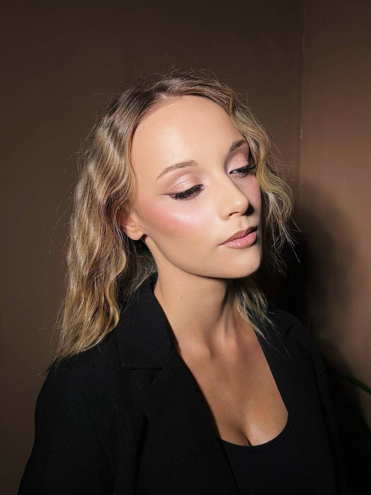
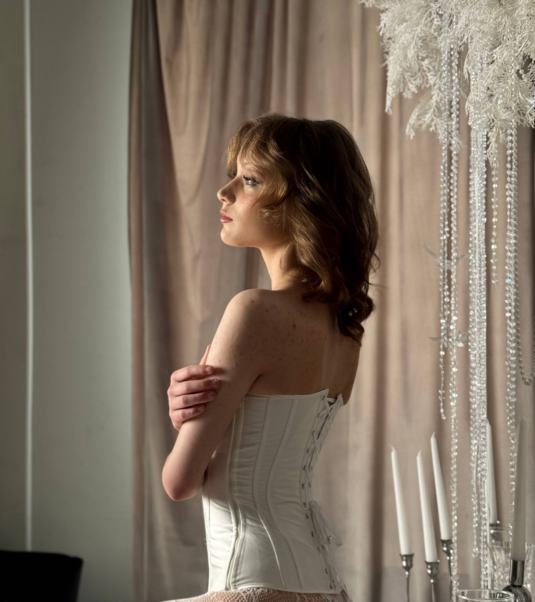

Эмоциональная
Может быстро менять настроение, много думать о ситуациях и прокручивать в голове диалоги.
ЛИЧНЫЙ АРХИВ · № 001
Портрет человека,
которого хочется узнавать.
Её характер, привычки, любимые вещи, мечты и маленькие детали. Всё, из чего складывается Варя.
Исследовать её мир ↘
У Вари свой взгляд на красоту, свой юмор, свои привычки и мечты. Здесь собран её собственный портрет — таким, каким она описала себя сама.

Смешная и красивая. Эмоциональная, ранимая, заботливая и любопытная. Любит красоту и внимание к деталям, умеет находить удовольствие в обычных моментах и не боится быть разной.
ЕЁ СЛОВА · ЕЁ МИРВаря описывает себя через эмоции, наблюдательность, заботу и чувство юмора. В ней сочетаются чувствительность и лёгкость, любовь к эстетике и умение дурачиться.
Может быстро менять настроение, много думать о ситуациях и прокручивать в голове диалоги.
Остро воспринимает слова и поступки, особенно когда речь идёт о близких людях.
Любит проявлять внимание к тем, кто ей дорог.
Ей интересно узнавать новое, замечать детали и рассматривать мир вокруг.
Любит шутить, долго болтать и находить смешное даже в обычных вещах.
Замечает особенности внешности людей и атмосферу мест, которые другие могут пропустить.
Искренность · верность · честность · надёжность · чувство юмора · умение слушать
Предательство · безразличие · жадность · отсутствие чувства юмора · нелюбовь к животным
То, что делает её узнаваемой: привычки, ритуалы и детали повседневности.
Может снова и снова прокручивать разговоры и разные ситуации, представляя, как всё могло бы сложиться.
Цвета, запахи, животные и места, которые создают настроение Вари.
Белый · чёрный · шампань · винный · бежевый
За солнце, красивые цвета и возможность собирать классные образы.
И ещё одна любовь — изящные русские борзые.
Тёплые, выразительные и запоминающиеся запахи.
Красивая одежда, макияж, архитектура и эстетика повседневности.
Особенно приятны слова о красивой фигуре, чистой коже и естественной внешности.
Занятия, к которым Варя возвращается в свободное время, и темы, которые ей интересны.
Не обязательно большие события. Иногда счастье складывается из простых и очень конкретных вещей.
Небольшие контрасты и сочетания, которые делают её портрет объёмнее.
Может часами прокручивать в голове разговоры и ситуации.
Замечает детали внешности и атмосферы, которые другие могут не заметить.
За любовью к сдержанной эстетике скрывается пошлое чувство юмора.
Любит одновременно ориентальных кошек и изящных русских борзых.
Ценит комплименты о естественной красоте, а не только о макияже.
Её идеальный вечер может сочетать PUBG, шутки и время с любимым человеком.
Пять кадров, с которых начинается этот архив. Нажмите на фотографию, чтобы рассмотреть её ближе.
Пять исполнителей, к которым Варя возвращается, и одна песня, которую хочется выделить отдельно.
Kai Angel
ПЯТЬ ИМЁН. СВОЙ СОБСТВЕННЫЙ САУНДТРЕК.
Любимые аниме и фильм — небольшая подборка из её личного списка.
Аниме
Аниме
Аниме
Аниме
Фильм
Мне всё равно…
я всё равно скоро забуду.
Мучиро Токито · «Клинок, рассекающий демонов»
Образ будущего, который Варя описывает для себя: тепло, горы, путешествия, любимое дело и свобода жить красиво.
Варя хочет жить там, где всегда тепло и рядом есть горы.
Гулять по красивым улицам, рассматривать архитектуру и наблюдать за стилем людей.
Две сферы, которые ей интересны. Окончательный выбор ещё впереди.
Путешествовать с Кириллом, быть замужем за любимым человеком, заниматься любимой работой и наслаждаться жизнью. Детей в своих планах на данный момент Варя не видит.
«Я не хочу, чтобы моя жизнь была просто правильной. Я хочу, чтобы она была красивой, интересной, эмоциональной, наполненной впечатлениями, любовью и маленькими радостями».
В Варином портрете особенно заметны две важные линии: эстетическое удовольствие от окружающего мира и эмоциональная близость с людьми. Ей важно не просто окружать себя красивыми вещами, а разделять впечатления с тем, кого любит.
Небольшая коллекция видео — живые моменты, настроение и сама Варя в движении.